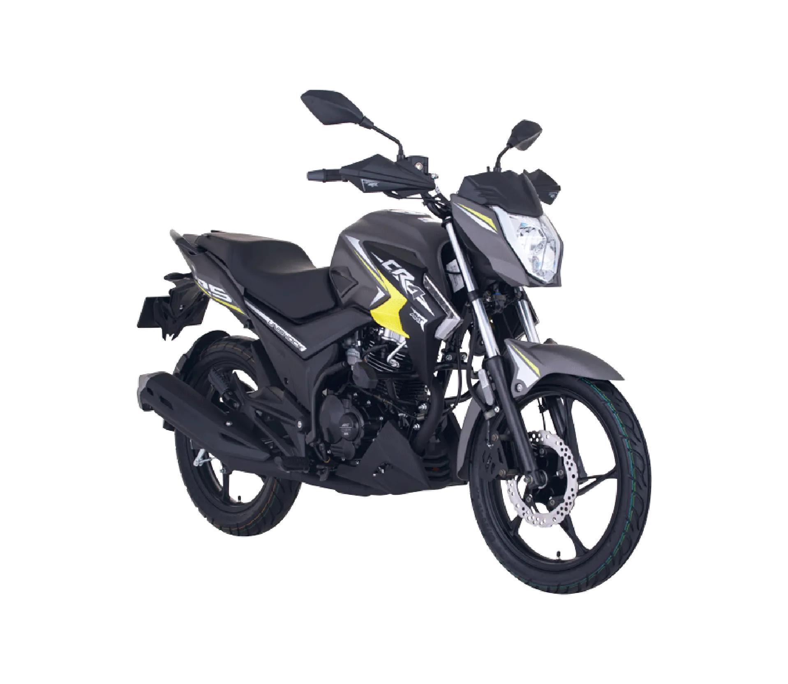
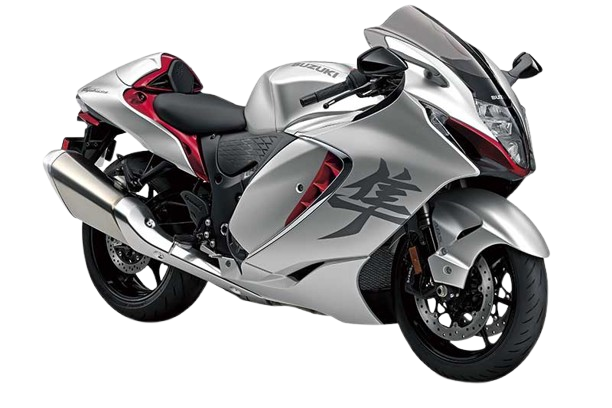

Analisis de las motos
Comparación entre la CR4, R15, Hayabusa y Gixxer 150: Cuatro modelos que definen diferentes
segmentos en el motociclismo.
Las motocicletas deportivas han capturado la atención de muchos motociclistas alrededor del
mundo
por su combinación de velocidad, maniobrabilidad y diseño. Entre las opciones más populares en
el mercado, encontramos modelos como la AKT CR4 125, la Yamaha R15, la Suzuki Hayabusa y la
Gixxer 150, cada una representando una propuesta única en su categoría. A pesar de que todas
compiten en el mismo campo de motociclismo, sus características y capacidades varían
enormemente, lo que hace que su comparación sea interesante para diferentes tipos de usuarios.
AKT Cr4 125cc
La AKT CR4 125 es una moto dirigida a los principiantes y motociclistas urbanos que buscan una
opción económica, pero con estilo y desempeño para desplazarse con agilidad en la ciudad. Con un
motor de 125cc y un diseño atractivo, la CR4 destaca por su relación calidad-precio y es ideal
para quienes inician en el mundo de las motos deportivas. Aunque no alcanza las altas
velocidades de sus competidoras más grandes, ofrece una experiencia satisfactoria para aquellos
que buscan eficiencia y facilidad de manejo.

SUZUKI Gixxer 150cc fi
La Suzuki Gixxer 150 se presenta como una opción intermedia, con un motor de 155cc, que combina
potencia, agilidad y un diseño deportivo. Es una moto que se ajusta a quienes buscan algo más
que una moto pequeña, pero que no desean el tamaño y el peso de una motocicleta de gran
cilindrada. Con una estética agresiva y un sistema de suspensión de calidad, la Gixxer 150
ofrece un rendimiento equilibrado tanto para uso urbano como para rutas más largas.
YAMAHA R15 150cc
Por otro lado, la Yamaha R15 se presenta como una moto deportiva de acceso con un motor más
potente, de 155cc, ofreciendo un equilibrio entre rendimiento y maniobrabilidad. Con un diseño
inspirado en motos de competición, la R15 tiene una gran presencia en el mercado de motocicletas
deportivas de pequeña cilindrada. Su motor de 4 tiempos y su tecnología avanzada, como el
sistema de inyección electrónica, la convierten en una opción muy popular para aquellos que
buscan velocidad y desempeño sin saltar a las cilindradas más grandes.
SUZUKI Hayabusa 1350cc
La Suzuki Hayabusa, sin duda, es la reina de esta comparativa, con un motor impresionante de
1,340cc que le otorga una velocidad y potencia sobresalientes. Esta moto es conocida por su
capacidad para alcanzar velocidades extremadamente altas, colocándola entre las motos más
rápidas del mundo. Con un diseño aerodinámico y una estructura que prioriza la estabilidad a
altas velocidades, la Hayabusa es una máquina creada para los amantes de la velocidad pura y la
adrenalina. Sin embargo, su alto precio y tamaño la hacen menos accesible para los motociclistas
novatos o quienes prefieren una moto para uso diario.
